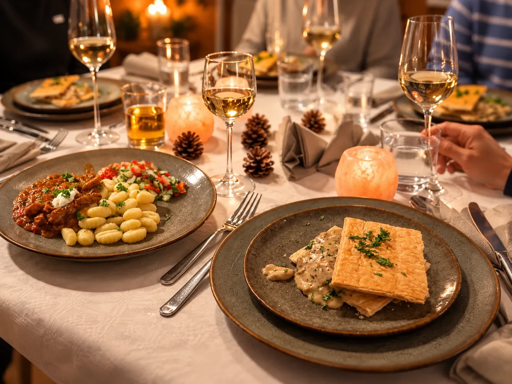

Send your preferred date, the number of guests and your holiday home address. Please also mention any dietary requirements or allergies.
PRIVATE DINING · VÄRMLAND
An evening together.
We take care of dinner.
Enjoy a personalised three-course dinner in your holiday home. Barbara takes care of preparation, cooking and serving, leaving you time for each other.
In your holiday homeNo restaurant visit needed
A personalised menuTailored to your group
3 coursesPrepared and served on location
Clear arrangementsPrice confirmed beforehand

TIME TO ENJOY
Your holiday evening, thoughtfully prepared.
A cosy evening with friends or family, a birthday or simply enjoying your holiday together: Barbara brings a lovingly prepared dinner to the place where you are staying.
We discuss your wishes, any allergies or dietary requirements and the kitchen facilities. Your menu is agreed beforehand. While Barbara cooks, you can stay with your guests.
Your host and chef
Barbara is your host and chef, looking after your evening with warmth and personal care. Her love of cooking began at the age of four. With a passion for flavours and aromas, she enjoys cooking for small groups. For Barbara, food is more than a meal: it is about enjoying time together, slowing down and making happy memories.
From your first enquiry to a relaxed evening.
We discuss the menu, kitchen facilities and price. Your dinner is booked once the arrangements and availability have been confirmed.
Barbara takes care of preparation, shopping, cooking and serving as agreed. Afterwards, we tidy up the kitchen. This is included in the package.
GUIDE PRICES
A three-course dinner for your group.
The guide price per person depends on the size of your group. The more guests, the lower the price per person. You will receive a proposal with the final total price before booking.
Private Dining with Barbara
- A personalised three-course menu
- Preparation and shopping as agreed
- Cooking and serving in your holiday home
- Tidying up the kitchen afterwards
- Travel costs included
- Coordination of the courses and the evening
| Number of guests | Guide price per person |
|---|---|
| 2 guests | 1.200–1.400 SEK |
| 3 guests | 1.000–1.100 SEK |
| 4 guests | 850–950 SEK |
| 5 guests | 750–850 SEK |
| 6+ guests | 700–800 SEK |
The final price depends on the menu, ingredients, dietary requirements and location. Travel costs are included. You receive a clear total price before booking.
Request a personalised proposalBook at least 5 days in advance
To allow time to prepare your dinner with care, please book at least 5 days in advance. Your booking is confirmed once we have confirmed availability and the arrangements.
Looking forward to a special holiday evening?
Tell us when and where you are staying and how many people will be dining. We will contact you to discuss your wishes.